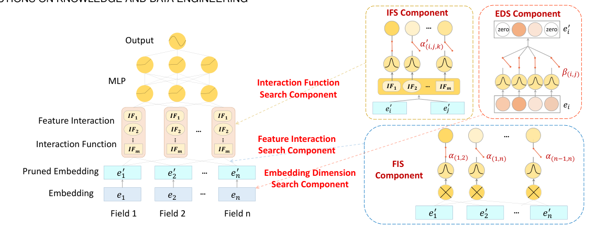

AIM: Automatic Interaction Machine for Click-Through Rate Prediction (自动交叉机：面向点击率预估的自动化特征交叉框架)
- 会议/期刊: IEEE TKDE 2021（AutoFIS 的期刊扩展版）
- 作者与机构: Chenxu Zhu, Bo Chen, Weinan Zhang(通讯), Jincai Lai, Ruiming Tang, Xiuqiang He, Zhenguo Li, Yong Yu（上海交通大学 & 华为诺亚方舟实验室）
- 推荐链路定位: 精排（CTR 预估打分）
- 研究方向: CTR/CVR 预估与特征交叉
- 论文原文: https://arxiv.org/abs/2111.03318v2
- 开源代码: https://github.com/zhuchenxv/AIM
TL;DR (1分钟核心速览)
主流深度 CTR 模型存在三处"一刀切"：交叉项靠人工设计或穷举、所有交叉共用同一交叉函数(IF)、所有特征共享同一嵌入维度。AIM 用门控架构参数 \(\alpha,\alpha',\beta\)把"选交叉 / 选交叉函数 / 选嵌入维度"统一松弛为可微连续搜索，配 GRDA 的\(L_1\)稀疏化自动置零剪枝，并给出\(O(n^2)\) 的高阶交叉候选池生成法。在 Avazu / Criteo / 华为私有集上按 AUC、LogLoss 点式评估，AIM 相对 IPNN 提升 0.66% / 0.21%，线上三周 A/B 对 DeepFM 提升 CTR 4.4%。
Background & Motivation (背景与核心矛盾)
- 主流范式: FM 家族（FM/DeepFM/IPNN/xDeepFM）以嵌入层 + 内积交叉层 + MLP 建模二阶/显式高阶交叉；AutoML 侧 AutoFIS、AutoGroup 只做交叉选择，AutoDim、AutoEmb 只做维度搜索。
- 前人局限①: 交叉项靠穷举（xDeepFM 的 CIN 参数爆炸）或人工指定（Wide&Deep），无用交叉引入噪声致过拟合，搜索空间 \(2^{C_n^2}\) 属 NP-Hard。
- 前人局限②③: 所有交叉共用单一 IF，不同映射子空间下的交叉模式被强行同构；所有特征共用维度 \(d\)，高预测力特征欠表达、低预测力特征浪费内存。
- 核心洞察 (Key Insight): 交叉的"是否保留""用哪种函数""维度留多少"本质是同一类门控开关问题，可用 DARTS 式可微松弛 + 稀疏正则联合求解，且 BN 能解耦门控值与交叉幅度的量纲耦合。
- 本文切入点: 一个统一门控框架中串行搜索 FIS → IFS → EDS，再以搜索结果为结构重训。
Method (核心方法设计)
1. 整体框架 (Overall Architecture)
输入多字段 one-hot 特征经嵌入层（EDS 控制的变长维度）得到 \(E'\)，进入交叉层；交叉层由 FIS 的门控决定保留哪些交叉项，再由 IFS 为每个交叉项选择具体 IF（内积/外积/向量核/标量核），其输出与 MLP 并行（DeepFM 式）或串接（IPNN 式）后过 sigmoid。训练分三阶段：Search interaction-IF 阶段同时学\(\alpha,\alpha'\)；Search embed 阶段固定交叉结构学\(\beta\)；Re-train 阶段用剪枝后的结构与维度从零重训。之所以拆开，是因为\(\alpha'\)与\(\beta\) 的架构参数存在耦合，联合训练不稳定。线上部署为简化版，推理延迟反而低于 DeepFM。
flowchart TD
A["多字段特征 One-hot"] --> B["嵌入层 + EDS 维度门控 β"]
B --> C["FIS 交叉门控 α 剪枝"]
C --> D["IFS 交叉函数门控 α' 选择 m 种 IF"]
D --> E["并行/串接 MLP"]
E --> F["Sigmoid 输出 CTR"]
2. 关键设计拆解 (Key Designs)
-
FIS：把交叉选择变成加权的内积和 + \(L_1\)稀疏：痛点是不知哪个交叉有用。做法是给每个二阶交叉挂架构参数，\(\ell_{FIS}=\langle w,x\rangle+\sum_{i<j}\alpha_{(i,j)}\langle e_i,e_j\rangle\)，\(\alpha_{(i,j)}=0\)即关门。关键在于对每个\(\langle e_i,e_j\rangle\)先做 BN（scale/shift 固定为 1 和 0），消除交叉幅度与\(\alpha\)的尺度耦合，否则\(\alpha\)无法代表"相对重要性"。高阶交叉采用两阶段法：先用 top-\(k\)的\((p-1)\)阶交叉与一阶特征做笛卡尔积生成候选池\(M^{tmp}_p\)，再在池内跑 FIS，把\(O(n^p)\)降到\(O(n^2)\)。
-
IFS 与函数专属嵌入 (FWE)：\(\ell_{IFS}=\langle w,x\rangle+\sum_{i<j}\sum_{k=1}^{m}\alpha'_{(i,j,k)}f_k(e_{ik},e_{jk})\)。若沿用共享嵌入，同一向量要同时接收内积、外积等不同映射空间的梯度，产生学习冲突；因此为每个 IF 复制一份嵌入\(e_{ik}\)，使每个嵌入只服务单一映射空间。代价是参数量约\(\times m\)，正好交由 EDS 回收。
-
EDS、训练目标与推理效率：\(\beta\in\mathbb{R}^{n\times d}\)逐维门控\(e'_i=\beta_i\odot e_i\)，搜索后\(d_i=\sum_j\mathbb{I}[\beta_{ij}\neq 0]\)并保留原维度位置（位置本身编码了与各交叉函数的对齐关系）；同字段的 FWE 共享\(\beta\)。总目标为交叉熵\(\mathcal{L}=-y\log\hat{y}-(1-y)\log(1-\hat{y})\)；架构参数用 GRDA（式 21，\(L_1\)近似 + 自适应稀疏强度\(g(t,\gamma)=c\gamma^{1/2}(t\gamma)^{\mu}\)）更新，网络权重用 Adam，无需人工指定保留比例，也无需负采样（点式二分类）。推理端剪枝掉约 80% 二阶交叉，Avazu 上推理 20 万样本 0.83s，低于 DeepFM 的 0.88s。
Experimental Setup & Evaluation Protocol (实验设置与评估协议)
- 数据集与预处理: 数值特征统一分桶离散化，多值字段用 multi-hot。
| 数据集 | #Users/实例 | #Features | #Fields | 正样本率 | 说明 |
|---|---|---|---|---|---|
| Avazu | \(4\times10^{7}\) | \(6\times10^{5}\) | 24 | 0.17 | Kaggle CTR 公开赛 |
| Criteo | \(1\times10^{8}\) | \(1\times10^{6}\) | 39 | 0.50 | 一个月点击日志 |
| Huawei | \(3\times10^{8}\) | \(1\times10^{5}\) | 10 | 0.07 | AppGallery 一周采样 |
- 数据划分与防穿越: Avazu 为随机打乱后 80%/20% 训练+验证/测试；Criteo 用 day 6–12 训练验证、day-13 测试（时间切分，防穿越）；华为私有集按周采样划分。
- 排名评测协议: 本文是点式二分类 CTR 评估，指标为 AUC 与 LogLoss，不做 Full-Ranking 全库排序对比；所有实验用 5 个随机种子重复取均值，并对最优基线做双侧非配对 \(t\)检验（\(p<0.005\)）。
- 对比基线与超参: 基线含 FM/FwFM/AFM/FFM/DeepFM/IPNN、FiGNN/AutoInt/xDeepFM、AutoFeature/AutoGroup/AutoFIS。嵌入维度 Avazu \(d=40\)、Criteo\(d=20\)，MLP 结构均为\(700\times5\)，GRDA 参数 Avazu\((c=0.05,\mu=0.6)\)、Criteo\((c=0.005,\mu=0.9)\)。
Key Experimental Results (实验关键数据)
1. 主实验对比 (Main Results)
| 类别 | 模型 | Avazu AUC | Avazu LogLoss | Criteo AUC | Criteo LogLoss | Huawei AUC | Huawei LogLoss |
|---|---|---|---|---|---|---|---|
| FM 系 | FM | 0.7793 | 0.3805 | 0.7909 | 0.5500 | 0.8168 | 0.1939 |
| FM 系 | FFM | 0.7831 | 0.3781 | 0.7980 | 0.5438 | 0.8279 | 0.1900 |
| FM 系 | DeepFM | 0.7836 | 0.3776 | 0.7991 | 0.5423 | 0.8338 | 0.1878 |
| FM 系 | IPNN | 0.7868 | 0.3756 | 0.8013 | 0.5401 | 0.8363 | 0.1867 |
| 交叉网络 | xDeepFM | 0.7855 | 0.3766 | 0.8006 | 0.5408 | 0.8368 | 0.1865 |
| AutoML | AutoFeature | 0.7904 | 0.3737 | 0.8023 | 0.5390 | 0.8365 | 0.1861 |
| AutoML | AutoGroup | 0.7909 | 0.3732 | 0.8026 | 0.5386 | 0.8360 | 0.1860 |
| AutoML | AutoFIS | 0.7883 | 0.3748 | 0.8012 | 0.5402 | 0.8373 | 0.1864 |
| — | AIM | 0.7920 | 0.3727 | 0.8030 | 0.5379 | 0.8385 | 0.1858 |
| — | Improv. vs 最强基线 | +0.11% | −0.13% | +0.05% | −0.13% | +0.14% | −0.16% |
高阶交叉侧：AIM(3rd) 在 Avazu 取 0.7912、AIM(4th) 取 0.7920，仅保留约 2% 三阶与 0.3% 四阶交叉，相对 AIM(2nd) 再涨 0.27% / 0.37% AUC。
2. 消融实验 (Ablation Study)
| 变体 | FIS | IFS | EDS | Avazu AUC | Avazu LogLoss | Criteo AUC | Criteo LogLoss | 参数量(\(10^7\)) Avazu |
|---|---|---|---|---|---|---|---|---|
| DeepFM | × | × | × | 0.7836 | 0.3776 | 0.7991 | 0.5423 | 2.9 |
| AIM-IFS-EDS | √ | × | × | 0.7869 | 0.3755 | 0.8015 | 0.5399 | — |
| AIM-EDS | √ | √ | × | 0.7894 | 0.3740 | 0.8024 | 0.5387 | 10.6 |
| AIM（全量） | √ | √ | √ | 0.7891 | 0.3742 | 0.8022 | 0.5388 | 3.8 |
3. 关键实验发现 (Key Findings)
- FIS 是主要收益源，且剪枝即加速：仅加 FIS 就把 Avazu/Criteo 的 AUC 从 0.7836/0.7991 推到 0.7869/0.8015（相对 +0.42%/+0.30%），同时砍掉约 80% 二阶交叉，训练/推理都比 DeepFM 更快（AutoFIS 推理 0.59s vs DeepFM 0.88s）。
- IFS 靠"函数异构"而非更复杂网络取胜，但必须配 EDS 才能落地：IFS 再贡献 +0.25%/+0.09% AUC，代价是参数量从 2.7→10.6（\(\times3.9\)）；EDS 将其压回 3.8，\(\times2.79/\times3.16\) 压缩率下 AUC 仅掉 0.0003，几乎零损。
- "多函数"不是越多越好，与交叉的重要性正相关：图 8 显示高 statistics-AUC 的交叉倾向于保留更多 IF，但随 IF 数量增加，边际 AUC 增益迅速消失（过拟合），说明逐交叉挑选优于统一全用。
Highlights & Limitations (亮点、对比与审稿批判)
- 与代表作对比 (vs. Prior Work): AutoFIS 只解"选交叉"，且所有选中交叉共用内积、共享维度；AutoDim/AutoEmb 只解"选维度"却忽略交叉结构；AutoFeature 虽同时搜交叉与函数，但依赖进化算法 + Naive Bayes 树反复训模型，开销难以工业化。AIM 的差异在于三件事共用一套门控 + GRDA 稀疏范式，并额外解决 FWE 带来的参数膨胀。
- 可迁移亮点: ①对交互项做 BN（scale/shift 固定）以解耦门控值与算子幅度的尺度耦合，这一技巧可直接搬到任何"带软门控的交叉/注意力打分"结构中；②两阶段 top-\(k\) 候选池把高阶搜索从指数降为平方，可复用于高阶交叉、序列物品共现搜索。
- 审稿级局限批判: ①三阶段串行搜索（\(O(n^2)\)候选池 + 三次训练）在 Avazu 上单卡仍要 ~155 分钟，且\(\alpha'\)与\(\beta\)的分离是工程妥协而非理论最优；②评估仅用点式 AUC/LogLoss，未给出全库排序或校准指标，线上也只报 CTR 相对提升 4.4%，缺少延迟 P99 与训练成本的定量代价分析；③EDS 保留维度位置的方式使嵌入维度不可跨字段对齐，对需要等长向量的 IF（如内积）只能补零，实际仍按\(d\) 计算。
Rating (四维评分)
- 方法创新性 (Novelty): ⭐⭐⭐⭐ （首次把交叉选择、交叉函数选择、嵌入维度搜索纳入统一可微门控框架，BN 解耦与 \(O(n^2)\) 高阶池是实打实的增量）
- 评估协议与实验扎实度 (Protocol & Experiments): ⭐⭐⭐⭐ （三数据集 + 5 种子 + \(t\) 检验 + 三周线上 A/B 完整，但缺少排序级指标与延迟/成本代价表）
- 写作与数学规范度 (Clarity & Rigor): ⭐⭐⭐⭐ （公式与三组件推导清晰、有复杂度分析，但 \(\beta\) 位置映射与高阶 IF 展开细节散落各节，阶段拆分的必要性仅作经验解释）
- 工业落地与复现价值 (Industrial & Practical Value): ⭐⭐⭐⭐⭐ （代码开源、剪枝后推理快于 DeepFM、已上线 AppGallery 并带来 4.4% CTR 增益，工程可复现性极强）